PFNP
Matt Studdert @stooderrrDay 1 Review
Agenda
- Intro to programming
- jQuery basics
- JavaScript
- What is backend development?
- Ruby
- Github
- Uploading to the web
Intro to programming
What is programming?
Programming is the task of writing instructions in a language that the computer can understand to then perform those instructions.
Computers can perform tasks extremely quickly, but developers need to programmatically break down those tasks to provide step-by-step instructions to the computer.
Deciding on a programming language
Selection criteria:
- Ease to learn
- Support (e.g. Community, StackOverflow)
- Development time
- Frameworks, libraries
- Speed
What is JavaScript?
- It is NOT Java!
- Originally called Mocha, then LiveScript, then JavaScript, then ECMAScript (currently ES2015)
- A language that was created in 10 days by Brendan Eich (May 1995)
- Cross-platform scripting language (executes a series of commands without being compiled)
- Loosely typed language (you do not declare the data types of variables explicitly)
What can you do with it?
A lot!
- Add interactivity (jQuery)
- Single Page Applications (React, Vue.js)
- Analytics, testing (Google Analytics, Optimizely, Mouse Flow)
- Data visualisation (D3.js)
- 3D rendering in the browser (Three.js)
- Native application development (React Native)
- Plus much more!
Our focus: interactivity
With regard to interactivity in JavaScript we will be repeatedly breaking down our code into 3 distinct steps:
- Event target (find an element(s) that will trigger an action)
- Event listener (listen for that action)
- Event handler (perform an output as a result of that action)
Pseudo code
Pseudo code
A great way to break down a problem into small chunks is to use pseudo code.
Pseudo code is usually typed using comments, so that it has no effect on the program being written. It is typically written in a mixture of natural language and high-level programming constructs.
JS Comments
These comments for pseudo-code can be either single line or multi-line syntax:

Psuedo-code example
A program that lets a player know whether he or she has passed the current level.
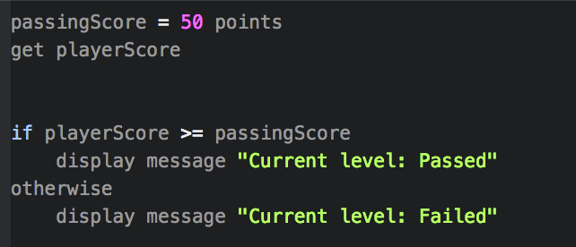Task
In Pairs
Write the pseudo-code for a thermostat that checks the temperature every 10 minutes and aims to keep the temperature at a perfect level for us.
JavaScript Syntax
Task
Code review
In pairs, visit this Codepen.
See if you can figure out, on a high level, what is going on.
Then:
- Try to make it so that the slow button turns the bulb yellow
- Try to make the go light work
Including JavaScript
To include JavaScript files, you need to link to the file within your HTML file using a <script> tag.
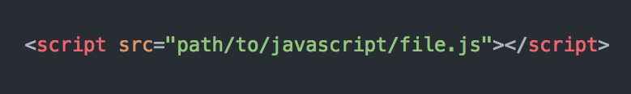Intro to jQuery
JavaScript downsides
JavaScript offers incredible flexibility as a programming language. Although that flexibility and the fact that it was initially created in 10 days means that it also has numerous bad parts (leading to a book called 'JavaScript: The Good Parts').
JavaScript libraries
To address certain downsides of the JavaScript language and to add convenient functionality, new JavaScript libraries began to emerge.
jQuery quickly took its place as the most highly used library, initially due to its cross-browser compatibility.
What is jQuery?
jQuery is a JavaScript library created by John Resig (released in 2006).
jQuery benefits
- Cleaner and more intuitive syntax
- Additional methods for simple DOM manipulation (e.g. adding/removing classes)
- Easy animation of elements and window (e.g. fading out an element, scrolling to a target element)
- AJAX - send and receive data from the server without refreshing the page
- Great plugin ecosystem for rapid development
- Plus more!
Including jQuery
-
Download the source code

-
Use a Content Delivery Network (CDN) (https://cdnjs.com/)

$
The jQuery library gives access to the jQuery function, which
allows use of all the jQuery functionality.

Developers are lazy though, so it was shortened to $.

jQuery selector syntax
Using vanilla JavaScript, the code to select elements is pretty verbose:

Whereas with jQuery it is much simpler (recognise the selectors?):

Remember the 3 steps to building interactivity?
- Event target (find an element(s) that will trigger an action)
- Event listener (listen for that action)
- Event handler (perform an output as a result of that action)
DOM manipulation
jQuery allows us to easily change the contents of the DOM and also change the appearance of DOM nodes (elements) in response to an event. Here are a few of the most common DOM manipulation methods:

A full list of DOM manipulation methods can be found here.
Task
In Pairs
Complete Part 1 of the jquery-code-along exercise.
Events
Events and making them easy to implement are the bread and butter of jQuery:

A full list of jQuery's events can be found here.
jQuery animation
Another benefit of using jQuery over vanilla JavaScript is the ability to easily add animation to elements:

A full list of jQuery's effects methods can be found here.
Task
In Pairs
Firstly, we'll complete the first task in Part 2 of the jquery-code-along exercise as a code along.
Then, complete the rest of Part 2 in your pairs.
AJAX
Asynchronous JavaScript and XML (AJAX) allows for the sending and receiving of data to and from a server, enabling a page's display to update without the need for a full window reload.
If you would like to learn more about AJAX, this Sitepoint article is a good starting point.
Programming concepts (using JavaScript)
Variables
Variables allow us to store data in our program for use later on. By assigning a value to a variable, we are effectively saving it in memory.
Assignment and re-assignment
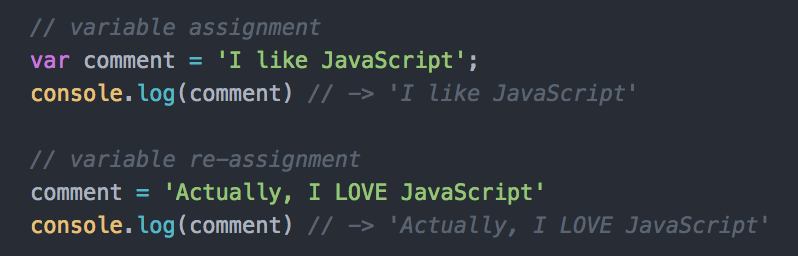
Use the keyword var to assign a variable. If a variable has been
declared, you can then change its value using re-assignment.
Naming conventions
Variable names are usually written in lowerCamelCase. This means that the first word is lowercased and then any other words in the name are capitalised.
Let's practice in the console
What can we store in a variable?
Here are the data types that can be stored in a variable:
- Boolean
- Number
- String
- Object
- Null
- Undefined
Data Type - Boolean

Booleans can have one of two values: true or false.
They most commonly appear in conditional statements (e.g. if/else).
Data Type - Number

Numbers are declared without quotation marks and can be used for arithmetic.
A number with decimal places are known as 'floats'. Numbers can have both positive and negative values.
Working with numbers

Data Type - String
Strings are used for working with words, sentences or sequences of characters. String literals are created by wrapping a sequence of characters with either single quotation marks ('hello') or double quotation marks ("hello").
Working with strings
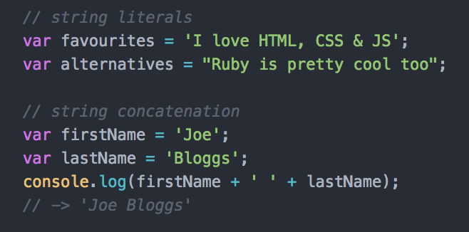Data Type - Null & Undefined
A variable that has not yet been assigned a value has a value of undefined.
undefined can also be assigned to a variable, although
it is recommended to use null.
null is the intentional absence of a value.
Data Type - Object
Objects are a collection of properties, with each property being a
{key: value} pair. The value of an object property can be
any data type as well a function. A property that has a function as the value
is known as a method.
Working with objects
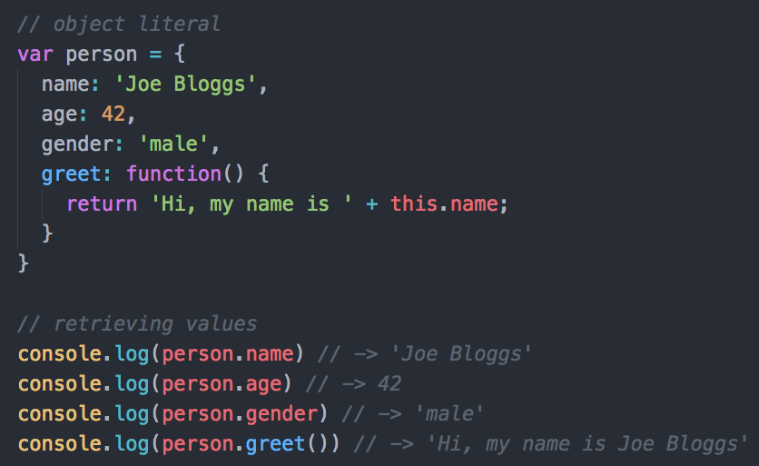Working with objects

Data Type - Array
Arrays are list-like objects that hold a collection of values. The also have built-in methods to allow for iterating over values and adding/removing values.
Each item in an array has an index. However, the index starts from 0, not 1. So the first value is at the 0 index.
Working with arrays

Comparisons
Comparisons - equality
It is common for values to be compared with one another in programming. Comparing values allows for the conditional running of certain blocks of code.
However, equality in JavaScript can get a little funky.
Comparing values


Always use === and !== to compare values, unless you have a good reason
Logical operators
Logical operators can be used to check if multiple expressions evaluate
to true or false or to check the opposite truthy/falsy
value.
Working with logical operators


Conditionals
As we have come across before, conditional statements can be used to control the flow of your program.
Using conditionals
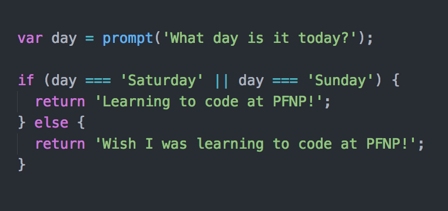Functions
Functions
Functions are mini programs within your larger program. Once defined, functions can then be called in order to execute a block of code.
How to write functions

Invoking a function

Arguments

Passing arguments

Function Example

APIs
Application programming interface (API)
- Specifies how one piece of software can interact with another piece of software
- Calling an API requires a HTTP request
- ‘Endpoints’ are API-defined locations where data can be retrieved or sent to
Let's see an example API
Databases
What is a database?
- An organised collection of information
- Allows application data to be stored and retrieved
- Examples: MySQL, PostgreSQL, MongoDB
SQL
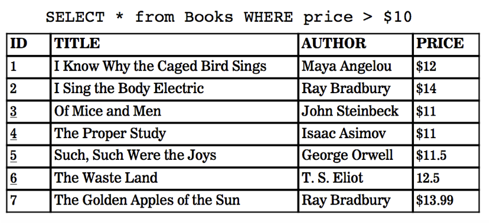Programming concepts (using Ruby)
What is Ruby?
A language designed and developed in 1993 by Yukhiro Matsumoto (aka “Matz”).
"Ruby's primary focus is productivity of program development, and users will find that programming in Ruby is productive and even fun." - Matz
Variables (in Ruby)
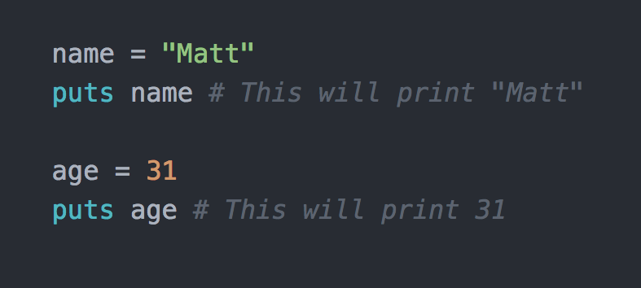Ruby data types
Data types in Ruby are virtually the same as in JavaScript...
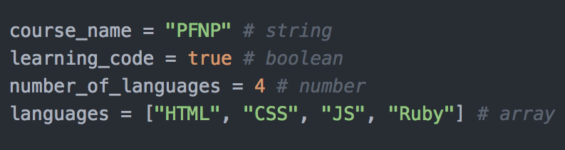Ruby Hashes
Much the same as JavaScript objects!
With a few subtle differences.
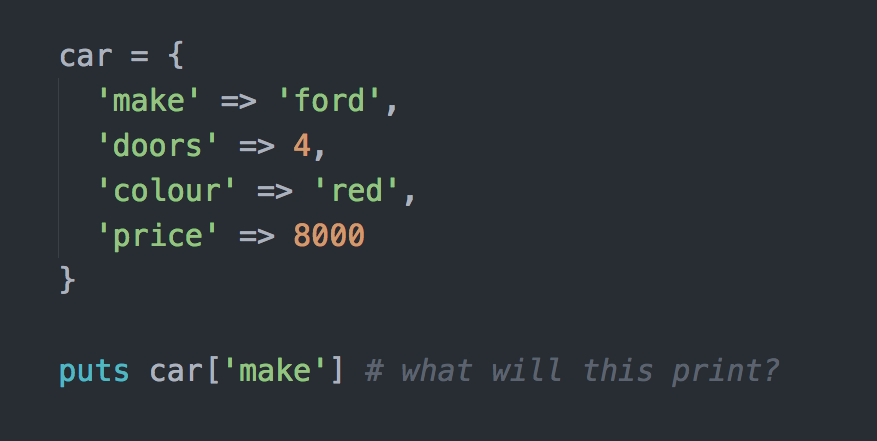Ruby conditionals
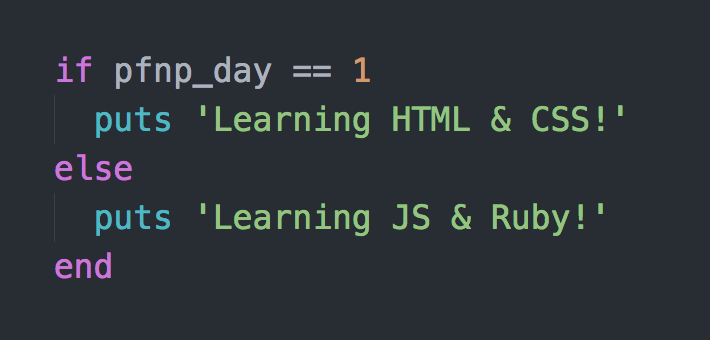Loops
What are loops for?
Loops are used in programming to perform repetitive tasks quickly and also to iterate over a collection of items (arrays for example).
Loops
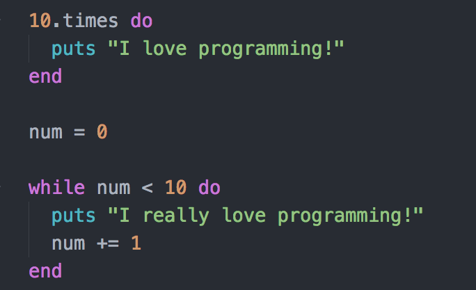Functions
The concept is the same as in JavaScript
The only difference between JavaScript functions and Ruby functions is the way they're declared.

Let's build a small Ruby program
Version Control
Git workflow
Git is a version control system (VCS) that saves the state of your project's files and folders; basically, it takes a 'snapshot' of what all your files look like at a given moment and stores a reference to that 'snapshot'.
The lingo
-
Repository/Repo: a central location in which data - typically about a project - is stored and managed
-
Clone: download data/code from the cloud to your local machine (laptop, computer, etc.)
-
Commit: save a version of your project to git
-
Branch: create an additional track for the code that is separate from the 'master' branch. This allows you to work on a feature/issue without affecting the main code until your feature is finished.
Branching
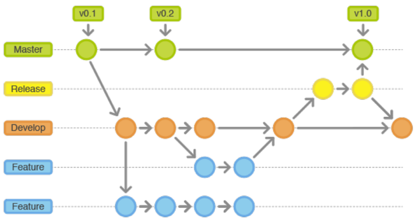Github
GitHub is a platform that makes it easy to manage git repositories. It provides a graphical interface to help you review and manage your code repos.
The files are hosted in the cloud so you can share the finished product with other people.
Why are git & GitHub valuable?
-
Stores a history of the code, which it allows developers to go back in time if something breaks.
-
Allows multiple developers to work on the same project.
-
GitHub tracks changes so you can see who worked on what (and who broke what).
-
GitHub allows for feedback to be given on the code, which hopefully, increases code quality.
Uploading to the web
Q&A
Matt Studdert
Please do stay in touch and let me know how you get on with your newfound coding knowledge!
- @stooderrr
- mattstuddert@gmail.com